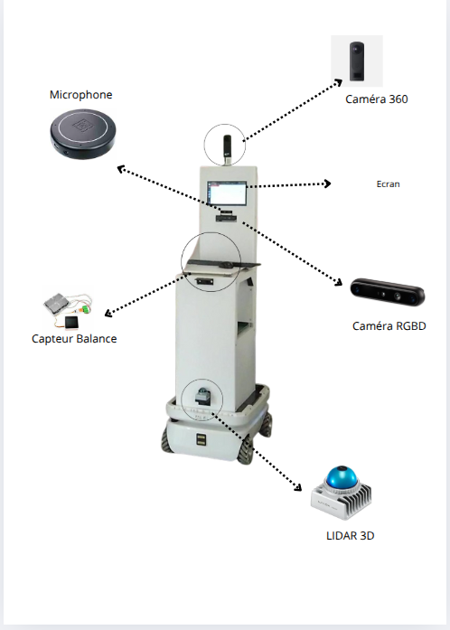

Expériences
AREAL-??
Projet industriel Sept 2025 – présentAmélioration des performances d’un chatbot interne.
Optimisation du flux de données et ajustement des algorithmes de réponse.
Chatbot fonctionnel et plus rapide. Amélioration de la qualité des réponses.
INRIA – Nancy
StageJuin – Août 2025
Contexte :Stage sur l’acquisition et l’organisation de données multimodales pour une étude en robotique sur le robot Shelfy.
Méthodes :Organisation de séances d’enregistrement, utilisation de YOLO et OpenCV pour le suivi des objets et des personnes.
Résultats :Base de données de 10 To structurée, avec reconnaissance faciale et anonymisation des sujets prête pour analyse.
CRAN – Université de Lorraine
Projet de rechercheFév – Mai 2025
Contexte :Test de marche de 6 minutes utilisé pour évaluer la mobilité des patients.
Méthodes :Application du filtre de Madgwick pour corriger les trajectoires des capteurs.
Résultats : Précision accrue de 20% dans l’analyse des trajectoires, permettant une meilleure évaluation clinique.

Directrice des systèmes d'information – TELECOM Nancy Services
2023 – 2024
Contexte :Gestion IT pour la Junior Entreprise de TELECOM Nancy, comprenant 20 collaborateurs et plusieurs projets internes.
Méthodes :Administration serveur, support utilisateur, mise à jour et maintenance du site web pour améliorer la lisibilité et l’accessibilité.
Résultats :Disponibilité accrue du système, site web plus clair et accessible, satisfaction globale des membres améliorée. Voir le site
KOSY Appart’Hôtel - Nancy
Stage opérationnel
Juillet 2024
Contexte :Stage opérationnel en accueil et coordination d’appart’hôtels.
Méthodes :Nettoyage et organisation des chambres, organisation des plannings, assistance à la clientèle, visites, inventaires.
Résultats :Amélioration de la satisfaction clients et optimisation de la coordination interne.
Voir le siteBénévole – Afev
2023 – 2024
Contexte :Accompagnement scolaire pour d'une élève en difficulté.
Méthodes :Tutorat personnalisé et suivi des progrès.
Résultats :Amélioration moyenne des résultats de +2 points.
Voir le siteUniversité Grenoble Alpes - Valence
Tutrice en maths appliquées –
Sept – Déc 2022
Contexte :Tutorat pour 30 étudiants en mathématiques appliquées.
Méthodes :Animation de TD, exercices guidés et suivi individualisé.
Résultats :Taux de réussite final de 60%, meilleure compréhension des concepts pour la majorité des étudiants.